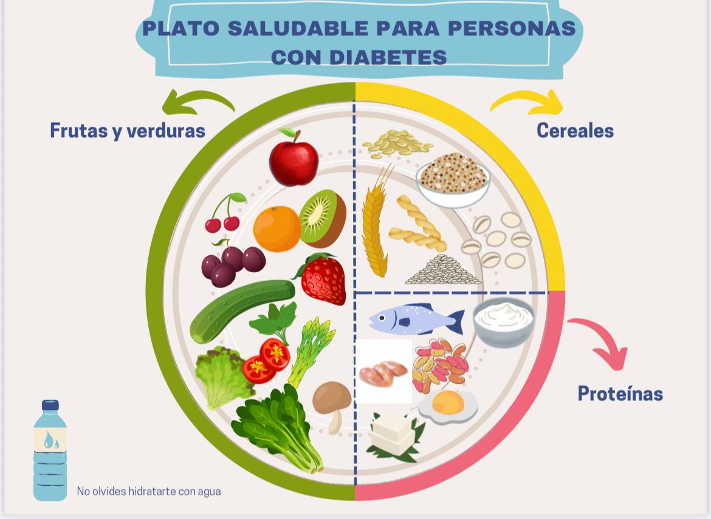

El plato saludable para personas con diabetes es una herramienta visual que ayuda a equilibrar los grupos de alimentos en cada comida para mantener niveles adecuados de glucosa en sangre.

Se recomienda que la mitad del plato esté compuesto por verduras, una cuarta parte por proteínas saludables como pollo o pescado, y la otra cuarta parte por cereales integrales o leguminosas.